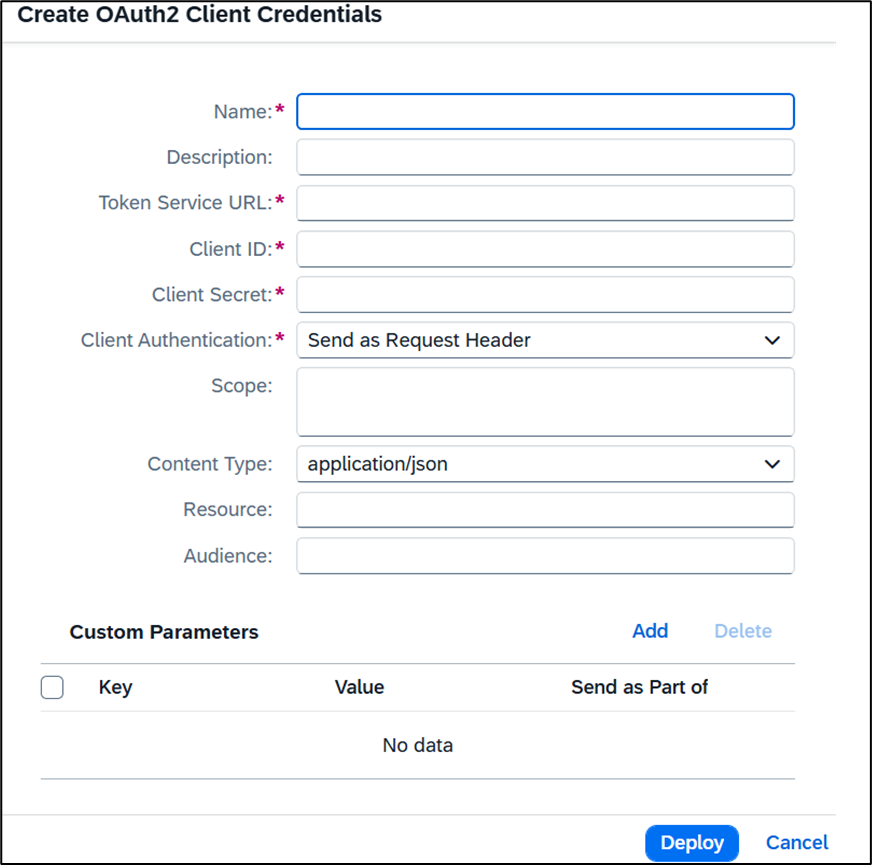
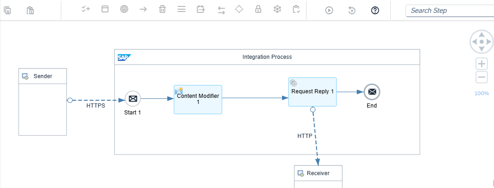
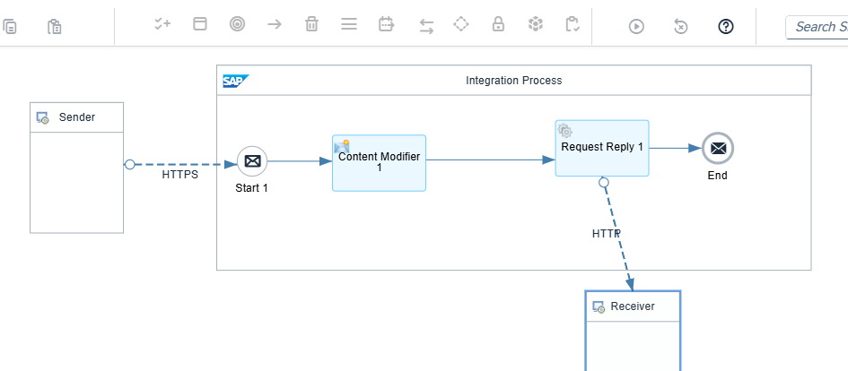
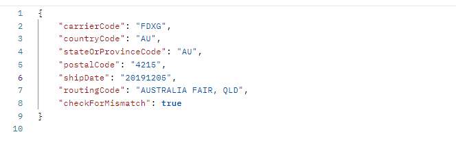
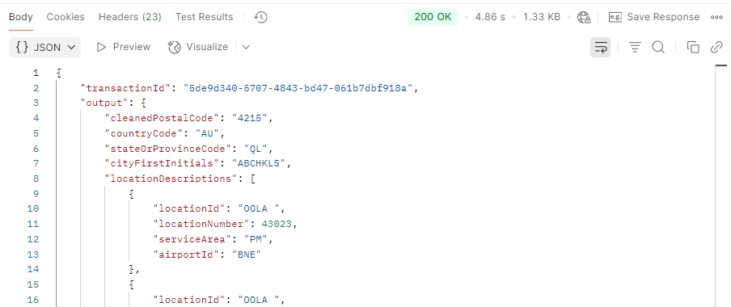

FedEx Integration through BTP: S/4 RISE - Fiori
Integrating FedEx with S/4HANA RISE using SAP Business Technology Platform (BTP) and Fiori applications enables organizations to streamline shipping operations within the SAP landscape.
BTP services like SAP Integration Suite act as middleware between S/4HANA and FedEx APIs for secure data exchange. These APIs are consumed via HTTPS REST calls, while S/4HANA exposes logistics or delivery data through OData services or BAPIs.

FedEx Shipping API Integration
The FedEx Shipping API is used to generate shipping labels and retrieve tracking numbers. Within SAP Integration Suite, an iFlow is created to extract delivery or sales order data from SAP S/4HANA, transform it into JSON format, and send it through an HTTP receiver adapter—triggering label creation directly from SAP.

FedEx Postal Code (Address Validation) API Integration
The Postal Code API helps validate recipient addresses before shipping. SAP Integration Suite sends user-entered or system-stored addresses to FedEx, which responds with validation results or suggestions—reducing return-to-sender incidents and ensuring address accuracy.

Successful API Testing in Postman

